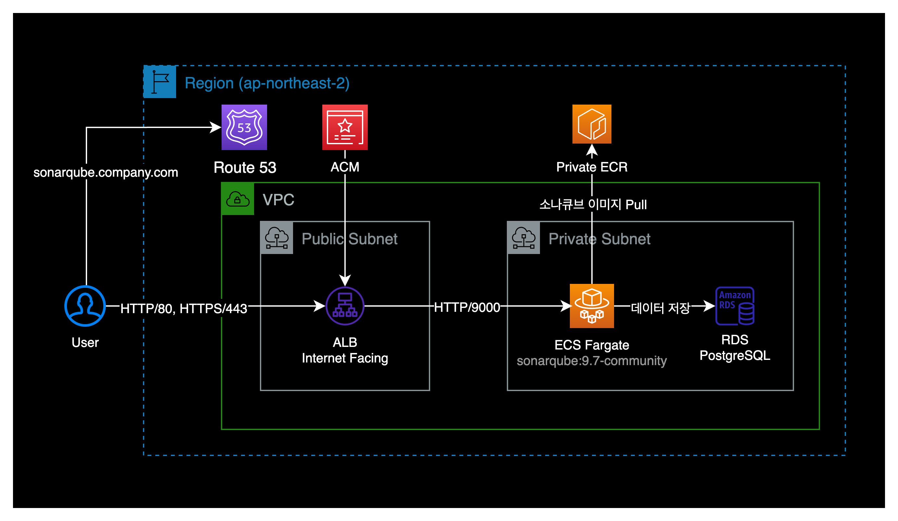
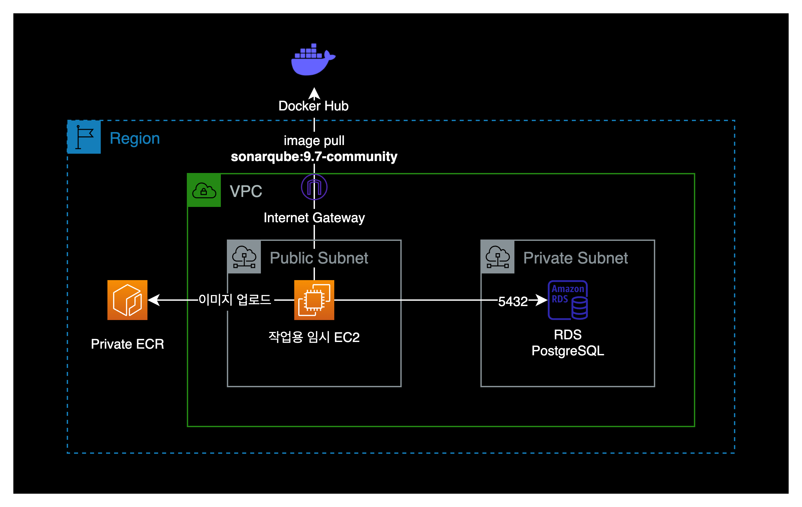
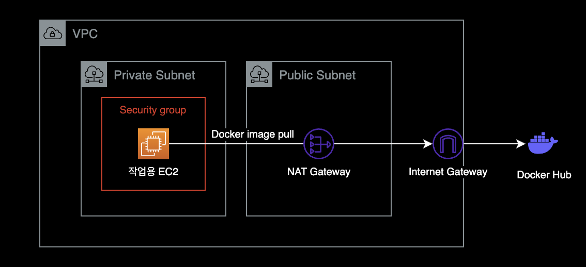
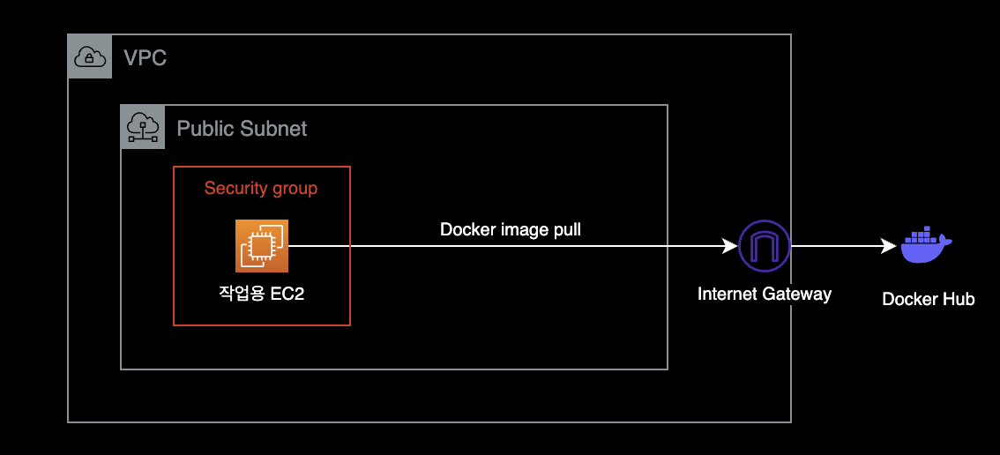
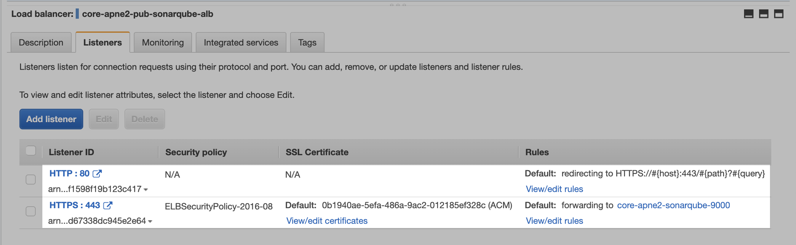
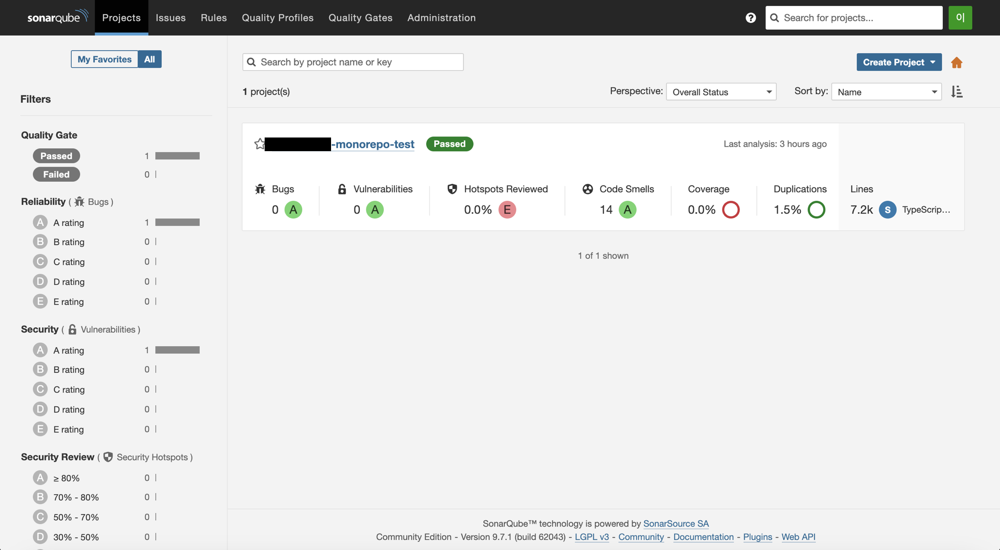

SonarQube ECS Fargate 설치
개요
ECS Fargate 워크로드 환경에 SonarQube 9.7.1을 구축합니다.
환경
구성할 AWS 인프라 환경은 다음과 같습니다.

ECS Fargate를 사용하면 EC2 관리에 발생하는 운영 오버헤드를 줄일 수 있으며, 소나큐브 전용 EC2 인스턴스를 항상 켜놓는 것보다 AWS 비용도 절감되는 장점이 있습니다.
구축하기
작업용 EC2 생성
먼저 작업용 EC2 1대를 생성하도록 합니다.
해당 EC2는 다음 부수적인 작업들을 수행할 때 활용할 예정입니다.

- 퍼블릭한 도커 허브에서 SonarQube 컨테이너 이미지 다운로드
- ECR에 소나큐브 이미지를 업로드
- RDS에 접속
- SonarQube 설치 전 DB 세팅
- sonarqube 사용자 생성
- sonarqube 데이터베이스 생성
AWS 콘솔에서 EC2 인스턴스를 1대 생성합니다.
Management 용도로 잠시 사용할 EC2이기 때문에 인스턴스 타입과 볼륨 등은 최저로 할당합니다.
- OS : Amazon Linux 2 (x86_64)
- Instance Type : t3.micro
- EBS 볼륨
- 용량 : 가장 최소인 8GB로 할당
- 타입 : gp3
- gp2보다 gp3가 20% 더 저렴합니다. AWS Korea 블로그
- Subnet : 인스턴스를 Internet Gateway 또는 NAT Gateway가 연결되어 있는 Public 서브넷에 생성해줍니다.
- 해당 EC2가 인터넷이 연결되는 환경이어야 아웃바운드로 Docker Hub에 연결한 후 소나큐브 컨테이너 이미지를 받아올 수 있습니다.
생성한 EC2의 OS, CPU 아키텍처 정보를 확인합니다.
$ cat /etc/*-release
NAME="Amazon Linux"
VERSION="2"
ID="amzn"
ID_LIKE="centos rhel fedora"
VERSION_ID="2"
PRETTY_NAME="Amazon Linux 2"
ANSI_COLOR="0;33"
CPE_NAME="cpe:2.3:o:amazon:amazon_linux:2"
HOME_URL="https://amazonlinux.com/"
Amazon Linux release 2 (Karoo)
x86_64는 아키텍처 정보로 Intel CPU 기반을 의미합니다.
$ arch
x86_64
작업용 EC2 인스턴스에 도커를 설치합니다.
Docker Hub에서 소나큐브 컨테이너 이미지를 다운로드(Pull)하고, Private ECR에 컨테이너 이미지를 업로드할 때 도커가 필요합니다.
$ sudo amazon-linux-extras install docker
$ sudo service docker start
$ sudo usermod -a -G docker ec2-user
$ sudo chkconfig docker on
위 명령어 절차는 install-docker.md Gist를 그대로 참고했습니다.
인스턴스에서 소나큐브 컨테이너 이미지를 다운로드 받습니다.
ECS Fargate에 사용할 컨테이너 이미지는 sonarqube:9.7-community 입니다.
$ docker pull sonarqube:9.7-community
인터넷 연결 필요
EC2 인스턴스가 도커 허브에서 소나큐브 이미지를 받으려면 인터넷 연결이 가능한 퍼블릭한 환경이어야 합니다.


도커 허브에서 소나큐브 이미지를 받아오지 못할 경우, 다음 체크리스트를 확인합니다.
- EC2 인스턴스가 Internet Gateway 또는 NAT Gateway가 연결된 서브넷에 배치되어 있는지 확인합니다.
- EC2에 연결된 보안그룹의 Outbound 룰에서 HTTP(80), HTTPS(443)이 허용되어 있는지 확인합니다.
- EC2 인스턴스에 도커 패키지가 정상적으로 설치되어 있는지 확인합니다.
ECR 생성
AWS CLI로 ECR 레포지터리를 생성합니다. 이 과정은 AWS 콘솔을 통해 ECR 저장소를 생성하셔도 상관 없습니다.
ECR 저장소의 태그 값 --tags는 예시입니다. ECR 저장소의 태그는 자신의 환경에 맞게 변경해주세요.
제 경우 AdministratorFullAccess IAM 권한을 가진 IAM Role에서 아래 명령어를 수행했습니다.
$ aws ecr create-repository \
--repository-name core-apne2-sonarqube \
--region ap-northeast-2 \
--tags '[{"Key":"Environment","Value":"core"},{"Key":"Creator","Value":"seyslee"}]'
작업용 EC2에서 ECR로 소나큐브 컨테이너 이미지를 업로드할 수 있도록 ECR에 허용 정책을 추가합니다.
AWS 콘솔에서 ECR → Repositories → Permissions → Edit policy json 클릭 → 아래 내용 복사 붙여넣기 → Save 버튼 클릭
{
"Version": "2012-10-17",
"Statement": [
{
"Sid": "AllowPushPullImage",
"Effect": "Allow",
"Principal": {
"AWS": [
"*"
]
},
"Action": [
"ecr:BatchGetImage",
"ecr:BatchCheckLayerAvailability",
"ecr:CompleteLayerUpload",
"ecr:GetDownloadUrlForLayer",
"ecr:InitiateLayerUpload",
"ecr:PutImage",
"ecr:UploadLayerPart"
]
}
]
}
인스턴스의 로컬에 다운로드 받은 sonarqube:9.7-community 이미지를 ECR에 업로드하기 위해 이미지 태그를 변경합니다.
$ docker tag sonarqube:9.7-community <aws-account-id>.dkr.ecr.ap-northeast-2.amazonaws.com/<ecr-repository-name>:9.7-community
EC2 인스턴스에서 Amazon ECR에 로그인합니다.
aws ecr get-login-password --region <region> | docker login --username AWS --password-stdin <aws-account-id>.dkr.ecr.<region>.amazonaws.com
<aws-account-id>는 ECR이 위치한 AWS Account ID로 변경하고, <region>은 ECR이 위치한 Region으로 변경합니다.
# 명령어 예시
aws ecr get-login-password --region ap-northeast-2 | docker login --username AWS --password-stdin 123456789012.dkr.ecr.ap-northeast-2.amazonaws.com
RDS 세팅
AWS 콘솔에서 PostgreSQL RDS를 생성합니다.
Engine Options
- Engine options
- Engine type : PostgreSQL
- Engine version : PostgreSQL 13.7-R1
- 주의 : SonarQube 9.7 기준으로 PostgreSQL 14.x 버전을 공식적으로 지원하지 않습니다. SonarQube 공식문서
- Templates
- Production
- Availability and durability
- Deployment options : Single DB instance
- Instance configuration
- DB instance class : t4g.micro
- Graviton CPU 기반 인스턴스 타입인
t4g.micro를 사용해도 소나큐브 운영에는 지장이 없으므로, 비용 절감을 위해t4g.micro로 사용하도록 합니다.
- Graviton CPU 기반 인스턴스 타입인
- DB instance class : t4g.micro
- Storage
- Storage type : General Purpose SSD (gp2)
- Allocate storage : 20 GiB
- 처음에 할당하는 스토리지 용량은 최소로 잡아줍니다. 운영하면서 자연스럽게 용량을 스케일링해 늘려가는 방식으로 운영해야 비용이 적게 나옵니다.
- Enable storage autoscaling 체크
- Maximum storage threshold : 200 GiB
- Connectivity
- Network Type : IPv4
- Public Access : No
- VPC security group (firewall)
- Choose existing
- 보안그룹에서 PostgreSQL의 기본 포트인 5432 인바운드를 허용해주어야 합니다.
- Monitoring
- Turn on Performance Insights 체크 해제
RDS 생성이 완료되면 AWS 콘솔에서 RDS Endpoint를 확인할 수 있습니다.
RDS Endpoint를 클립보드에 복사합니다.
작업용 EC2에 접속합니다. 이 작업용 EC2에서 PostgreSQL DB에 접속할 예정입니다.
PostgreSQL RDS에 접속하려면 psql 명령어가 필요합니다. Amazon Linux 2에는 psql 명령어가 기본적으로 포함되어 있지 않아서 별도 설치가 필요합니다.
postgresql 패키지를 설치해줍니다.
$ sudo -i
$ id
uid=0(root) gid=0(root) groups=0(root)
$ yum install postgresql -y
postgresql 패키지의 설치 결과를 확인합니다.
$ which psql
/bin/psql
$ psql --version
psql (PostgreSQL) 9.2.24
위와 같이 결과가 나오면 정상적으로 설치된 것입니다.
EC2 인스턴스에서 PostgreSQL RDS에 접속합니다.
$ psql \
-U postgres \
-h <YOUR_RDS_ENDPOINT>
postgres 유저의 패스워드를 입력해서 로그인합니다.
Password for user postgres: <초기 RDS 생성시에 입력한 패스워드 입력>
psql (9.2.24, server 13.7)
WARNING: psql version 9.2, server version 13.0.
Some psql features might not work.
SSL connection (cipher: ECDHE-RSA-AES256-GCM-SHA384, bits: 256)
Type "help" for help.
postgres=>
PostGres DB 세팅
소나큐브에 연동하기 위해 RDS에 소나큐브용 계정과 소나큐브용 데이터베이스 생성이 필요합니다.
#==== sonarqube 유저 생성 ====
postgres=> create user sonarqube with password 'sonarqube';
CREATE ROLE
postgres=> alter role sonarqube with createdb;
ALTER ROLE
#==== sonarqube 데이터베이스 생성 ====
postgres=> create database sonarqube;
CREATE DATABASE
postgres=> alter database sonarqube owner to sonarqube;
ALTER DATABASE
postgres=> grant all privileges on database sonarqube to sonarqube;
GRANT
데이터베이스 목록을 확인합니다.
sonarqube=> \l
List of databases
Name | Owner | Encoding | Collate | Ctype | Access privileges
-----------+-----------+----------+-------------+-------------+-------------------------
postgres | postgres | UTF8 | en_US.UTF-8 | en_US.UTF-8 |
rdsadmin | rdsadmin | UTF8 | en_US.UTF-8 | en_US.UTF-8 | rdsadmin=CTc/rdsadmin +
| | | | | rdstopmgr=Tc/rdsadmin
sonarqube | sonarqube | UTF8 | en_US.UTF-8 | en_US.UTF-8 | =Tc/sonarqube +
| | | | | sonarqube=CTc/sonarqube
template0 | rdsadmin | UTF8 | en_US.UTF-8 | en_US.UTF-8 | =c/rdsadmin +
| | | | | rdsadmin=CTc/rdsadmin
template1 | postgres | UTF8 | en_US.UTF-8 | en_US.UTF-8 | =c/postgres +
| | | | | postgres=CTc/postgres
postgres Name을 가진 데이터베이스가 추가되었고, Owner가 postgres 계정이면 정상입니다.
PostgreSQL DB 내부의 전체 Role 목록을 확인합니다.
sonarqube Role에 Create DB 권한이 부여되어 있으면 정상입니다.
sonarqube=> \du
List of roles
Role name | Attributes | Member of
---------------------------+------------------------------------------------+--------------------------------------------------------------
pg_execute_server_program | Cannot login | {}
pg_monitor | Cannot login | {pg_read_all_settings,pg_read_all_stats,pg_stat_scan_tables}
pg_read_all_settings | Cannot login | {}
pg_read_all_stats | Cannot login | {}
pg_read_server_files | Cannot login | {}
pg_signal_backend | Cannot login | {}
pg_stat_scan_tables | Cannot login | {}
pg_write_server_files | Cannot login | {}
postgres | Create role, Create DB +| {rds_superuser}
| Password valid until infinity |
rds_ad | Cannot login | {}
rds_iam | Cannot login | {}
rds_password | Cannot login | {}
rds_replication | Cannot login | {}
rds_superuser | Cannot login | {pg_monitor,pg_signal_backend,rds_replication,rds_password}
rdsadmin | Superuser, Create role, Create DB, Replication+| {}
| Password valid until infinity |
rdsrepladmin | No inheritance, Cannot login, Replication | {}
rdstopmgr | Password valid until infinity | {pg_monitor}
sonarqube | Create DB | {}
Target Group
- Protocol HTTP : Port 9000
- IP address type : IPv4
- VPC : ECS Fargate 컨테이너가 구동되는 동일한 VPC로 설정
- Protocol Version : HTTP1
- Health checks
- Health check protocol : HTTP
- Health check path : /
ECS Fargate의 경우 Target Group에 등록된 타겟 IP를 자동적으로 관리해줍니다.
ECS 컨테이너가 새로 뜨는 경우 컨테이너의 IP가 변경되는데, 이 때 자동적으로 타겟그룹에 등록된 IP도 자동적으로 변경해줍니다.
ALB
- Load balancer types : Application Load Balancer
- Scheme : Internet-facing
- IP address type : IPv4
- 리스너 설정
- HTTP 80은 HTTPS 443으로 Redirect
- HTTPS 443은 9000번 소나큐브 타겟그룹으로 Forward
- Secure listener settings
- Security policy : 기본값 (ELBSecurityPolicy-2016-08)
- Default SSL/TLS certificate
- From ACM
- Select a certificate 에서 미리 생성한 ACM 인증서 선택
세팅 완료한 ALB의 리스너 설정은 다음과 같습니다.

Task Definition 생성
Select launch type compatibility에서 Fargate를 선택합니다.
- Task definition name : sonarqube
- Task role : None
- 소나큐브 컨테이너의 환경변수에 PostgreSQL DB의 ID, PW가 직접 들어가 있기 때문에 Task role은 별도로 필요하지 않습니다.
- Operating system family : Linux
- Task execution role : ecsTaskExecutionRole
- Task size
- Task memory (GB) : 2GB
- Task CPU (vCPU) : 0.5 vCPU
Add container에서 다음과 같이 설정합니다.
Standard
- Container name : sonarqube
- Image : <YOUR_AWS_ACCOUNT_ID>.dkr.ecr.ap-northeast-2.amazonaws.com/<YOUR_ECR_NAME>:9.7-community
- Memory Limits (MiB) : Soft limit, 1024
- 컨테이너가 전체 2GB 테스크 메모리 중 1GB를 점유하고 구동되도록 설정 합니다.
- Port mappings : 9000 tcp
Advanced container configuration
컨테이너 환경변수, 실행할 명령어, Resource Limits 등의 더 자세한 설정을 하는 단계입니다.
-
ENVIRONMENT
-
command
-Dsonar.search.javaAdditionalOpts=-Dnode.store.allow_mmap=false -
Environment variables : 컨테이너에 주입되는 3개의 환경변수의 경우, 필요하다면 SSM Parameter Store를 사용하는 선택지도 존재합니다.
- SONAR_JDBC_URL = jdbc:postgresql://core-apne2-sonarqube-postgresql.xyzxxyzxxyzx.ap-northeast-2.rds.amazonaws.com:5432/sonarqube
- PostgreSQL DB용 JDBC URL 포맷은
jdbc:postgresql://<RDS_ENDPOINT>:5432/<DATABASE_NAME>입니다. 위 값은 예시이며, 자신의 환경에 맞게<RDS_ENDPOINT>와<DATABASE_NAME>을 바꿔주세요. - 참고자료 : PostgreSQL의 JDBC 설정 공식문서
- PostgreSQL DB용 JDBC URL 포맷은
- SONAR_JDBC_USERNAME = sonarqube
- SONAR_JDBC_PASSWORD = sonarqube
SONAR_JDBC_USERNAME과SONAR_JDBC_PASSWORD는 RDS 세팅 과정에서 설정한 ID/PW와 동일하게 맞춰주어야 합니다.
- SONAR_JDBC_URL = jdbc:postgresql://core-apne2-sonarqube-postgresql.xyzxxyzxxyzx.ap-northeast-2.rds.amazonaws.com:5432/sonarqube
-
-
RESOURCE LIMITS
Limit name Soft limit Hard limit NOFILE 131072 131072 NPROC 8192 8192 리눅스 서버에서 소나큐브를 구동하는 경우에는 반드시 nofile 값이 최소 131072, nproc 값이 최소 8192로 설정되어 있어야만 합니다. 소나큐브 공식문서
위와 같이
NOFILE,NPROC값을 설정하지 않으면 소나큐브 컨테이너가 생성 → 중지 → 다시 생성을 무한 반복하게 됩니다.# 문제 발생시에 ECS Task에 출력되는 로그 bootstrap check failure [1] of [1]: max file descriptors [4096] for elasticsearch process is too low, increase to at least [65535]이 경우 Add container → Advanced container configuration → RESOURCE LIMITS에서 NOFILE 값을 131072로 설정해주면 해결할 수 있습니다.
결과 확인
웹 브라우저를 열고 ALB에 할당된 도메인 주소 또는 ALB 주소를 매핑한 Route 53의 도메인 주소로 접속합니다. (e.g. https://sonarqube.company.com)

ECS Fargate 기반의 SonarQube 9.7.1 구축이 완료되었습니다.
이 글에서 다루지는 않았지만 Okta를 통한 SAML 연동과 젠킨스 파이프라인과의 연동도 정상적으로 동작하는 걸 확인했습니다.
참고자료
SonarQube deployed in AWS ECS Fargate
제 경우 위 글을 보고 ECS Fargate 기반의 소나큐브를 구축할 수 있었습니다.
Running SonarQube in ECS
ECS에서 RESOURCE LIMITS 설정 방법을 이 글을 통해서 찾았습니다.